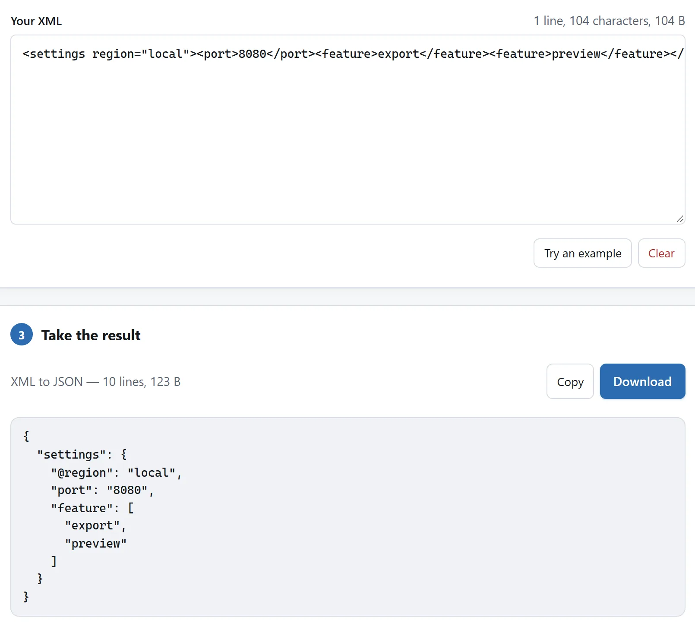

粘贴或导入 XML
打开格式化工具，粘贴 XML 或选择文本文件。缩进可选两个空格、四个空格或制表符，也可选择压缩输出。解析成功后复制或下载当前结果。输入变化时，旧结果立即失效，工具会检查新内容。
解析器在本地运行，检查文档语法；不会验证 XSD 或 DTD，不保证配置适用于你的应用，也不会访问文本中的 URL。

排查响应、订阅源或配置改动
单行 API 响应或 RSS 源展开后更易检查。导入保存的 XML，选两空格，解析停止时用“跳到错误”。核对根元素、属性和重复条目。普通 XML 文字或属性中的地址含 & 时必须写 &，不能直接用裸 &。修好后用接收应用再检查，这里不验证订阅规则或 XSD。
XML 配置迁移 JSON 时转换副本，检查 @ 属性、重复元素数组和字符串值，再与拟用 JSON 比较。先统一两份 JSON 格式。适合数据文档；映射会丢注释和混合内容顺序，不适合保存文章结构。
定位解析错误
未闭合标签、结束标签不匹配或无效字符引用会停止格式化和转换。使用跳转到错误将光标移至报告的位置。文档需要一个外层元素：两个根元素或根元素外的文本都会被拒绝。
<settings>
<port>8080</port>
</settings>DOCTYPE 文本原样保留，不解析外部实体；声明中出现文件或网站名称不会加载它们。
重新缩进前了解空白处理
文本值、CDATA 和混合内容元素会保留文本。仅位于子元素之间的空白会被当作布局处理，除非适用 xml:space="preserve"。这样便于阅读配置，但若应用将这些空白当作数据，复用前需要检查结果。
了解 XML 转 JSON 的变化
阅读结果前先选择转换方向。属性变成以 @ 开头的键，重复元素变成数组，其他内容旁的文本使用 #text。XML 值仍是字符串：<port>8080</port> 不会被推断为数字。
JSON 映射会丢失注释，以及混合文本和子元素的交错顺序。因此转回 XML 不保证还原原文。请保存原始副本，并对比应用使用的字段。
只格式化 JSON、不进行上述映射时，请使用 JSON 格式化工具。